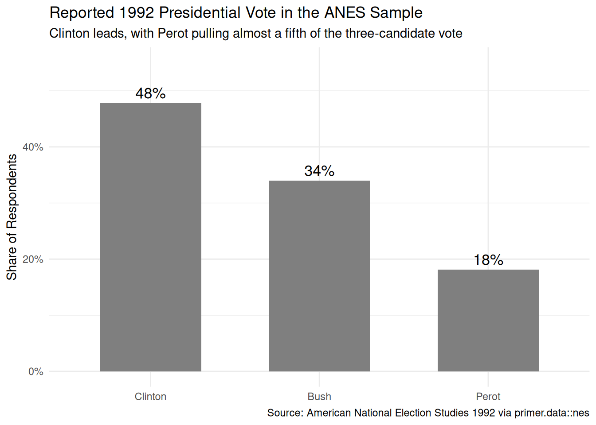
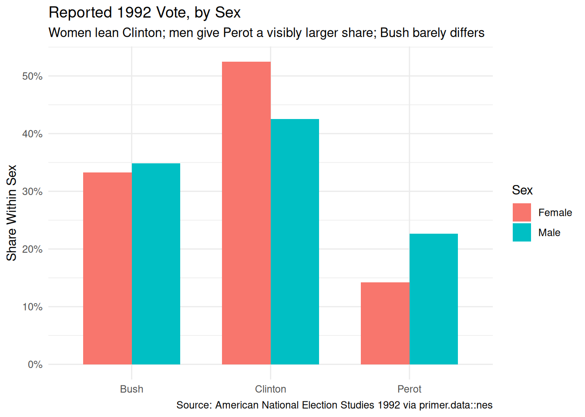
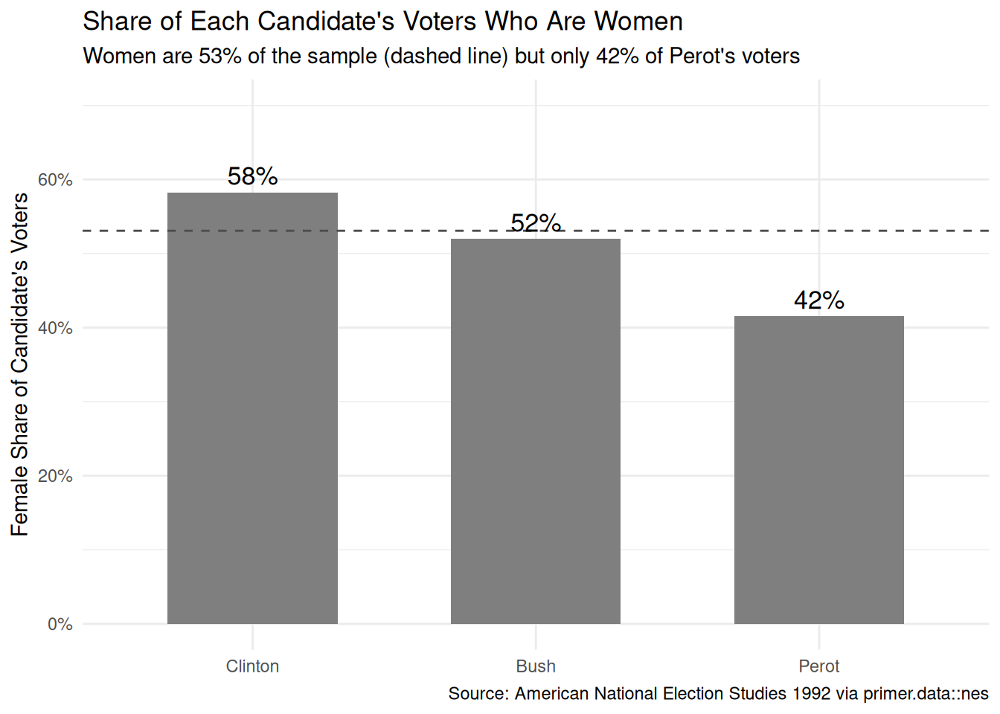
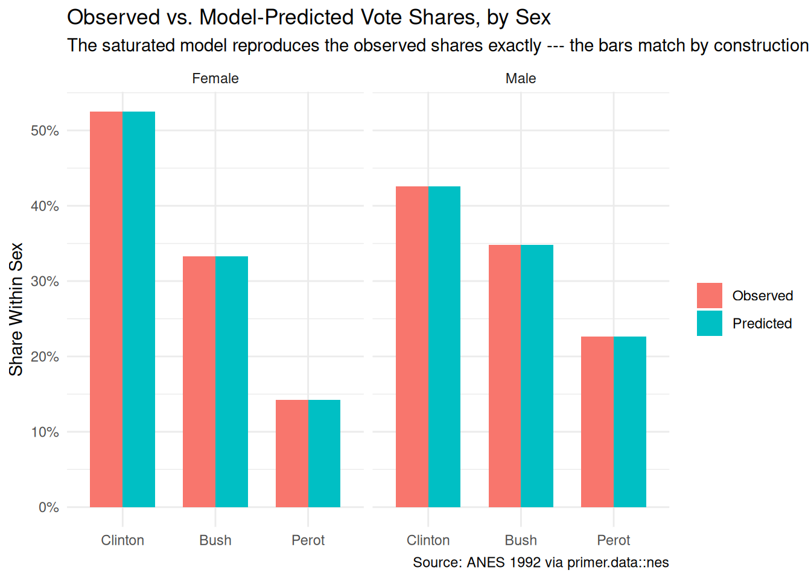
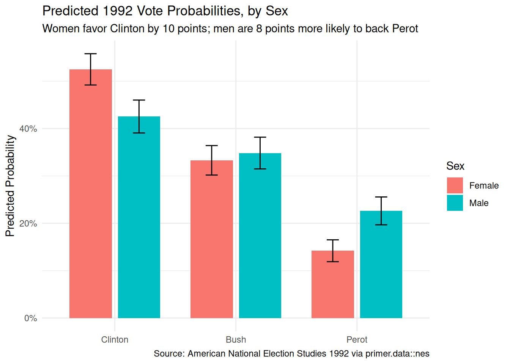

The four Cardinal Virtues for working through a data science problem are Wisdom, Justice, Courage, and Temperance. The problem this time is a presidential election with three candidates — an outcome that is not a number, not a yes-or-no, but a choice among unordered alternatives — and the tool is multinomial logistic regression.
Imagine that you are a political scientist studying the 1992 presidential election. Your boss — the editor of a university-press book on American electoral behavior — has a big-picture goal: explain how Clinton, Bush, and Perot split the electorate. She has chapters to assign, page budgets to allocate, and referees to satisfy, and she trusts you to bring her evidence about which divides mattered. Did men and women vote differently? Did the young break for Perot? Did education or income sort voters more sharply than region did? Each is a question you could ask out loud in her office. This chapter focuses on one estimate: the difference between men and women in the probability of voting for each of the three candidates, with its associated uncertainty. The estimate alone won’t write the book, but it is one good input. There are many decisions to make.
The data we will work from is nes, available in the primer.data package: the American National Election Studies, the longest-running academic election survey in the world. The full tibble covers every ANES wave from 1948 to 2020; we use the 1992 slice. Of the 2,485 respondents interviewed in the 1992 wave, 1,658 reported voting for Clinton, Bush, or Perot and have a recorded sex; those 1,658 rows, with the party labels relabeled to candidate names, form our analysis tibble nes_92. The outcome column pres_vote takes three unordered values (Clinton: 793 respondents, Bush: 564, Perot: 301); the single covariate sex takes two (Female: 880, Male: 778).
11.1 Wisdom
Wisdom.
Wisdom begins with a question and then moves on to the creation of a Preceptor Table and an examination of our data.
Wisdom commits us to a question precise enough to be answered. The Preceptor Table makes the commitment concrete: it is the smallest table that, if every cell were filled in with the truth, would make the question’s answer easy to read off.
The combination of some data and an aching desire for an answer does not ensure that a reasonable answer can be extracted from a given body of data. — John W. Tukey
11.1.1 The American National Election Studies
The ANES has interviewed a sample of Americans around every presidential election since 1948, making it the longest-running data source on U.S. voter behavior. Its design is unusually demanding: respondents sit for a long face-to-face interview before the election and a second one after it. The pre-election interview measures attitudes, issue positions, and vote intentions; the post-election interview asks, among much else, whom the respondent actually voted for. That two-interview structure is the survey’s great strength — it can connect what people said in October to what they report having done in November — and also, as we will see in Justice, one of its characteristic weaknesses, because completing two long interviews is not something a random cross-section of Americans agrees to do.
The vote question itself deserves a close look, because it is our outcome variable. It is asked in the post-election interview, weeks after the ballots were cast, and it records a recollection, not a ballot. Decades of methodological work on the ANES and similar surveys have documented a consistent pattern in recalled vote: it drifts toward the winner. Some respondents who voted for the losing candidates report, after the outcome is known, that they voted for the winner — misremembering and the pull of social desirability push in the same direction. The drift is modest, a few percentage points, but it is systematic, and it means the data’s vote column and the truth it stands in for are not quite the same thing.
11.1.2 The 1992 election
The 1992 presidential election was the most successful three-way race in modern American history. Bill Clinton won with 43.0% of the popular vote; the incumbent George H. W. Bush took 37.4%; and Ross Perot, a Texas businessman running as an independent, took 18.9% — the best third-party showing since Theodore Roosevelt’s Progressive run in 1912. Perot achieved this without winning a single state, and after one of the strangest campaigns on record: he led some national polls in the spring, abruptly withdrew from the race in July, and re-entered in October, five weeks before Election Day. About 104 million Americans cast ballots.
The election also sat inside a political season remembered for its gender politics — 1992 was dubbed the “Year of the Woman” after a record number of women won Senate seats — and the gender gap, the tendency of men and women to split their votes differently, had been a fixture of American election commentary since 1980. Whether and how that gap ran through a three-candidate field is exactly the kind of question our political scientist’s editor would want answered: did women favor Clinton? Did Perot’s outsider, deficit-hawk appeal land differently with men? The chapter’s model measures both.
11.1.3 The primary question
The primary question for this chapter is predictive:
What is the difference in the probability of voting for Perot between men and women in the 1992 presidential election?
This is a predictive question — the kind of question that calls for a predictive model. We want a single number: the difference between the two groups in the model-implied probability of a Perot vote, in percentage points. With a three-category outcome, a question has to pick a category to be specific — “how did the vote distribution differ by sex” is a vector, not a number — and Perot is the category we pick, because his candidacy is what made 1992 unusual. The model will deliver the Clinton and Bush answers along the way.
A note on the multinomial model and what its parameters mean. A multinomial logistic regression handles an outcome with three or more unordered categories by designating one category as the reference and modeling the log-odds of each other category relative to that reference. The coefficients are therefore two translations away from anything a reader wants: first from log-odds to probability, then from reference-relative to absolute. The chapter will read the model both ways: through the raw coefficient table (a tool for Courage) and through the predicted probabilities that marginaleffects delivers on the outcome scale (the answers Temperance commits to).
1 If all the information in this table were available, we could answer the question: What is the difference in the probability of voting for Perot between men and women in the 1992 presidential election?
2 Each row is one American who cast a ballot for Clinton, Bush, or Perot on November 3, 1992 --- roughly 100 million voters. The example rows use plausible names; missing rows represent the rest of the electorate.
3 The vote actually cast, taking one of three unordered values: Clinton, Bush, or Perot. The three-category outcome is what makes this a multinomial problem.
4 Sex as the voter would report it, Female or Male. Shown because the question asks how the vote distribution differed between the two groups.
The Preceptor Table here is as small as they come: one unit column, one three-valued outcome column, one covariate. Note who is excluded: the tens of millions of adults who stayed home, and the sliver who voted for minor candidates. The question is about the people who actually chose among the big three.
11.1.4 Exploring the data
Before fitting a model, look at the data. You can never look too closely at your data — the hour spent on a careful EDA almost always saves a day downstream.
Show the code
nes_92|>count(pres_vote)|>mutate(share =n/sum(n), pres_vote =fct_reorder(pres_vote, -share))|>ggplot(aes(x =pres_vote, y =share))+geom_col(fill ="grey50", width =0.6)+geom_text(aes(label =scales::label_percent(accuracy =1)(share)), vjust =-0.4, size =4.5)+scale_y_continuous(labels =scales::label_percent(), limits =c(0, 0.55))+labs( title ="Reported 1992 Presidential Vote in the ANES Sample", subtitle ="Clinton leads, with Perot pulling almost a fifth of the three-candidate vote", x =NULL, y ="Share of Respondents", caption ="Source: American National Election Studies 1992 via primer.data::nes")+theme_minimal()

The sample’s three-way split — 48% Clinton, 34% Bush, 18% Perot — sits noticeably to Clinton’s advantage relative to the certified popular vote (43.0 / 37.4 / 18.9). Part of that gap is sampling noise; part of it is the winner-drift in recalled vote that the ANES background section described. The Perot share, interestingly, survives almost intact: whatever social pressures push recalled votes around, admitting a Perot vote seems not to have embarrassed anyone.
Show the code
nes_92|>count(sex, pres_vote)|>group_by(sex)|>mutate(share =n/sum(n))|>ggplot(aes(x =pres_vote, y =share, fill =sex))+geom_col(position ="dodge", width =0.7)+scale_y_continuous(labels =scales::label_percent())+labs( title ="Reported 1992 Vote, by Sex", subtitle ="Women lean Clinton; men give Perot a visibly larger share; Bush barely differs", x =NULL, y ="Share Within Sex", fill ="Sex", caption ="Source: American National Election Studies 1992 via primer.data::nes")+theme_minimal()

The raw shares already sketch the answer to our question. Women split 52.5% Clinton / 33.3% Bush / 14.2% Perot; men split 42.5% / 34.8% / 22.6%. The 1992 gender gap, in this data, barely runs through the two major parties’ relative standing — the Bush share differs by little more than a point — and instead runs through Perot versus Clinton: men reported voting for Perot at half again the rate women did, and those Perot votes came, arithmetically, out of the Clinton column.
Show the code
nes_92|>count(pres_vote, sex)|>group_by(pres_vote)|>mutate(share =n/sum(n))|>filter(sex=="Female")|>ggplot(aes(x =fct_reorder(pres_vote, -share), y =share))+geom_col(fill ="grey50", width =0.6)+geom_hline(yintercept =880/1658, linetype ="dashed", color ="grey30")+geom_text(aes(label =scales::label_percent(accuracy =1)(share)), vjust =-0.4, size =4.5)+scale_y_continuous(labels =scales::label_percent(), limits =c(0, 0.7))+labs( title ="Share of Each Candidate's Voters Who Are Women", subtitle ="Women are 53% of the sample (dashed line) but only 42% of Perot's voters", x =NULL, y ="Female Share of Candidate's Voters", caption ="Source: American National Election Studies 1992 via primer.data::nes")+theme_minimal()

Flipping the conditioning shows the same fact from the candidates’ side: women make up 53% of the sample but only about 42% of Perot’s reported voters, against 58% of Clinton’s. The two views — vote shares within sex, sex shares within vote — are arithmetic transformations of one another, but audiences read them very differently, and a careful analyst reports whichever one matches the question. Ours (the vote-share gap between sexes) is the first.
A few specifics worth flagging from the EDA:
827 of the 2,485 respondents in the 1992 wave are not in our tibble. They reported not voting, voting for a minor candidate, or gave no answer. Our analysis is conditional on being a three-candidate voter, which is precisely what the question asks — but it means nothing here speaks to turnout.
The outcome arrives as party labels. The raw pres_vote says “Democrat,” “Republican,” “Third Party”; our data prep relabels them Clinton, Bush, Perot. Purely presentational — the model does not care — but every table and plot downstream reads better for it.
The reference category will be Bush. R orders factor levels alphabetically, so Bush comes first and becomes the reference in the multinomial model. Every coefficient will be a log-odds relative to Bush — worth fixing in mind now, because the parameter table is unreadable without it.
11.1.5 The paired question
The difference between predictive models and causal models is that the former have one column for the outcome variable and the latter have more than one column.
Every question has a shadow in the opposite framing. Since our primary question is predictive, the paired question is causal:
What is the causal effect of sex on the probability of voting for Perot?
This is an absurd question, in the same way the Recruits and Smokes chapters’ paired questions were absurd. Sex is not a manipulable treatment: you cannot toggle a voter from female to male, hold everything else about their life fixed, and watch which lever they pull. The implied counterfactual — would Carol Jenkins have voted for Perot had she been a man? — has no operational referent, because a voter’s sex is bundled with a lifetime of correlated experiences (socialization, economic history, issue exposure) that would all be different too. We pose the question anyway, and carry its bookkeeping honestly, because the exercise makes visible that the predictive/causal distinction is an analyst’s commitment, not a property of the data.
Preceptor Table --- Paired (causal) question1
Unit2
Potential Outcomes3
Treatment4
Voter
Vote if Female
Vote if Male
Sex
Carol Jenkins
Clinton
Perot
Female
Frank Kowalski
Clinton
Perot
Male
…
…
…
…
Dorothy Mitchell
Bush
Bush
Female
1 If all the information in this table were available, we could answer the question: What is the causal effect of sex on the probability of voting for Perot? The implied manipulation (toggling a voter's sex) is not realizable; the table is a pedagogical device for making the predictive/causal distinction visible, not a defensible causal claim.
2 Each row is one 1992 three-candidate voter, as in the primary Preceptor Table.
3 Two potential outcomes per row: the vote the person would cast as a woman and as a man. The cell matching the voter's actual sex is observed; the other is the unobservable counterfactual, hatched.
4 The same Sex column that sat under a Covariate spanner in the primary Preceptor Table sits here under a Treatment spanner. The column is identical; only the analyst's commitment changed.
The two Preceptor Tables differ in exactly the bookkeeping that distinguishes predictive from causal:
The primary table has one outcome column (Vote); the paired table has two potential-outcome columns (the vote under each value of the “treatment”).
The primary table has Sex under a Covariate spanner; the paired table has the same column under a Treatment spanner. The column itself is identical.
The same fitted model will serve both questions. The two readings differ only in what the analyst is willing to claim.
11.2 Justice
Justice.
Justice concerns the Population Table, the four key assumptions which underlie it (validity, stability, representativeness, and unconfoundedness), and the choice of probability family and link function for the data generating mechanism.
Justice is where you (or your critics) raise concerns about whether the model will do what you want it to do. The four assumptions are the named families of concerns; they are not testable from the data alone, they are choices the analyst makes and defends.
The bridge runs data → population → Preceptor Table. Justice’s job is to make sure both arrows are defensible.
There are known knowns. There are things we know we know. We also know there are known unknowns. That is to say, we know there are some things we do not know. But there are also unknown unknowns, the ones we do not know we do not know. — Donald Rumsfeld
11.2.1 The Population Table for the primary question
Population Table --- Primary question1
Source
Unit/Time2
Outcome3
Covariate4
Voter
Year
Vote
Sex
…
…
…
…
…
Data
Susan Hartley
1992
Clinton
Female
Data
Raymond Ortiz
1992
Perot
Male
Data
…
…
…
…
Data
Helen Brennan
1992
Bush
Female
…
…
…
…
…
Preceptor
Carol Jenkins
1992
Clinton
Female
Preceptor
Frank Kowalski
1992
Perot
Male
Preceptor
…
…
…
…
Preceptor
Dorothy Mitchell
1992
Bush
Female
…
…
…
…
…
1 This table combines the ANES 1992 sample with the Preceptor Table's full 1992 electorate, drawn from the same population of American presidential voters in the early 1990s.
2 Data rows are ANES respondents interviewed in late 1992; Preceptor rows are the roughly 100 million Americans who cast three-candidate ballots on November 3. Both blocks carry the same year --- the rare problem where the data and the question share a moment.
3 The presidential vote. In Data rows, the vote as reported to an ANES interviewer weeks after the election; in Preceptor rows, the ballot actually cast. The gap between report and ballot is the validity discussion below.
4 Sex, recorded as Female or Male in both blocks.
11.2.2 Validity
Validity is the consistency, or lack thereof, in the columns of the data set and the corresponding columns in the Preceptor Table.
Validity is about columns. Two columns can have the same name and measure different things.
For our problem, the outcome column is the worry. The Preceptor Table’s Vote column records the ballot each voter cast on November 3. The data’s pres_vote column records what each respondent told an interviewer weeks later — and the ANES background section already flagged the systematic gap between the two: recalled vote drifts toward the winner. Our sample’s Clinton share (48%) exceeds his certified share (43%) by enough to make the point vivid. The two columns are close, and analysts use ANES recall as a stand-in for ballots all the time, but the correspondence is an assumption, not a fact.
The covariate column is simpler. Sex was recorded by the interviewer in the 1992 wave, and the Preceptor Table’s sex column means the same demographic classification. The match is close enough for our purpose.
11.2.3 Stability
Stability means that the relationship between the columns in the Population Table is the same for three categories of rows: the data, the Preceptor Table, and the larger population from which both are drawn.
Stability is a statement about parameters, not distributions — and this chapter is the curriculum’s gentlest stability case, because the data and the Preceptor Table share a year. The parameters connecting sex to vote choice need to hold only across the few weeks separating Election Day from the ANES post-election interviews.
Even that short bridge is not automatic. Perot’s support was uniquely volatile — he quit the race in July and re-entered in October — and public commentary immediately after the election framed his 19% as a spoiler showing. If male support for Perot hardened or softened in the weeks after the outcome was known, then the sex-to-Perot parameter in the interview window differs from the parameter that governed the ballots. The gap is small, but the assumption is doing real work even across weeks.
The common confusion is worth naming here as everywhere: a change in the mix of who was interviewed (more women than men completed the post-election wave, say) is a distribution shift, not a stability violation. What stability guards is the relationship — the parameters connecting sex to candidate probability — not the composition of people it applies to.
11.2.4 Representativeness
Representativeness, or the lack thereof, concerns two relationships among the rows in the Population Table. The first is between the data and the other rows. The second is between the other rows and the Preceptor Table.
Two links to defend, and in this chapter — with stability nearly free — they carry almost all the risk.
Data → population. The ANES is built on a genuine multi-stage probability sample, which puts it far ahead of most data in this book. But the road from “sampled” to “in our tibble” has two toll booths. First, completing two long face-to-face interviews selects for the politically engaged, and engagement correlates with both sex and vote choice. Second, our cut drops the ANES survey weights that are designed to correct for exactly this kind of nonresponse. The 1,658 rows we model over-represent the highly engaged relative to the early-1990s voting population.
Population → Preceptor Table. The Preceptor Table contains only the people who turned out and voted for one of the three major candidates. The broader population of voting-age citizens includes tens of millions who stayed home, and turnout is self-selection at scale — it rises with age, education, and engagement, and differed by sex in 1992. Inferences that hold for the citizenry need not hold for the self-selected subset who cast three-candidate ballots, which is the subset our question is about.
A non-representative sample doesn’t guarantee a biased estimate — the distortions might cancel. But chance is the only mechanism that would save us, and we have no principled reason to expect it to.
Unconfoundedness means that the treatment assignment is independent of the potential outcomes, when we condition on pre-treatment covariates.
Unconfoundedness applies only to the paired causal question. The primary predictive question does not require it.
For the paired question, unconfoundedness is not defensible. Sex is not assigned by any mechanism, random or otherwise, that leaves the rest of a voter’s life fixed. Everything bundled with sex — socialization, economic history, military service rates in the cohorts that fought in Vietnam and Korea, differential exposure to the “Year of the Woman” campaigns — is also correlated with vote choice. The treatment, in the causal sense, does not exist. We carry the paired Preceptor Table to show what the bookkeeping would look like if we made the causal commitment; Temperance will not defend the reading as a real-world claim.
11.2.6 The Population Table for the paired question
The paired Population Table has the same row structure as the primary — ANES data rows and full-electorate Preceptor rows, all in 1992 — but two potential-outcome columns instead of one, with the unobservable counterfactual hatched in the Preceptor rows and ... in the Data rows.
Population Table --- Paired question1
Source
Unit/Time2
Potential Outcomes3
Treatment4
Voter
Year
Vote if Female
Vote if Male
Sex
…
…
…
…
…
…
Data
Susan Hartley
1992
Clinton
…
Female
Data
Raymond Ortiz
1992
…
Perot
Male
Data
…
…
…
…
…
Data
Helen Brennan
1992
Bush
…
Female
…
…
…
…
…
…
Preceptor
Carol Jenkins
1992
Clinton
Perot
Female
Preceptor
Frank Kowalski
1992
Clinton
Perot
Male
Preceptor
…
…
…
…
…
Preceptor
Dorothy Mitchell
1992
Bush
Bush
Female
…
…
…
…
…
…
1 Same row structure as the primary Population Table, with two potential-outcome columns instead of one. Data rows have '...' for the unobserved counterfactual; Preceptor rows have both potential outcomes filled in, with the unobservable one hatched.
2 Data rows are ANES respondents; Preceptor rows reuse the voters from the paired Preceptor Table.
3 The vote under each value of the treatment. Hatching marks the truth that exists in the table but could never be observed, since no voter experiences both sexes.
4 Sex, treated here as a two-level treatment for this absurd, pedagogical causal framing.
11.2.7 Probability family and link function
The outcome pres_vote takes three unordered values. The probability family for an unordered multi-category outcome is Multinomial:
The denominator is what makes the three probabilities sum to one for every voter. Our model will be a multinomial logistic regression. The covariates we use are settled in Courage.
11.3 Courage
Courage.
Courage creates the data generating mechanism.
The three languages of data science are words, math, and code, and the most important of these is code. Justice settled the structural choices — three-category outcome, Multinomial family, multinomial logistic link. Courage picks covariates, writes the model in code, and estimates the parameters.
11.3.1 Candidate models
With a single covariate available, the candidate set is short: the intercept-only model, and the model with sex.
11.3.1.1 Candidate 1: pres_vote ~ 1
Show the code
multinom_reg(engine ="nnet")|>fit(pres_vote~1, data =nes_92)|>tidy(conf.int =TRUE)|>select(y.level, term, estimate, conf.low, conf.high)|>mutate(across(where(is.numeric), \(v)round(v, 3)))|>kable(caption ="Candidate model: pres_vote ~ 1. Coefficients on the log-odds scale, relative to Bush. Source: ANES 1992 via primer.data::nes.")
Candidate model: pres_vote ~ 1. Coefficients on the log-odds scale, relative to Bush. Source: ANES 1992 via primer.data::nes.
y.level
term
estimate
conf.low
conf.high
Clinton
(Intercept)
0.341
0.233
0.449
Perot
(Intercept)
-0.628
-0.768
-0.488
Even the intercept-only multinomial model has two parameters, because everything is measured relative to the reference category (Bush, alphabetically first). The Clinton intercept (0.341) is the log-odds of a Clinton vote versus a Bush vote among all voters; positive, because Clinton was the more common reported vote. The Perot intercept (-0.628) is the log-odds of Perot versus Bush; negative, because Perot trailed Bush. Neither number is on a scale anyone reads directly, and without a covariate the model emits the same three probabilities for every voter — the sample shares, exactly.
11.3.1.2 Candidate 2: pres_vote ~ sex
Show the code
multinom_reg(engine ="nnet")|>fit(pres_vote~sex, data =nes_92)|>tidy(conf.int =TRUE)|>select(y.level, term, estimate, conf.low, conf.high)|>mutate(across(where(is.numeric), \(v)round(v, 3)))|>kable(caption ="Candidate model: pres_vote ~ sex. Coefficients on the log-odds scale, relative to Bush. Source: ANES 1992 via primer.data::nes.")
Candidate model: pres_vote ~ sex. Coefficients on the log-odds scale, relative to Bush. Source: ANES 1992 via primer.data::nes.
y.level
term
estimate
conf.low
conf.high
Clinton
(Intercept)
0.455
0.309
0.602
Clinton
sexMale
-0.255
-0.473
-0.038
Perot
(Intercept)
-0.852
-1.061
-0.642
Perot
sexMale
0.420
0.138
0.703
Adding sex doubles the parameter count: an intercept and a sexMale offset for Clinton-versus-Bush, and the same pair for Perot-versus-Bush. The Perot sexMale coefficient (+0.420, 95% CI [0.14, 0.70]) says the log-odds of Perot-over-Bush are higher for men; the interval excludes zero, so the direction is not sampling noise. The Clinton sexMale coefficient (-0.255, CI [-0.47, -0.04]) says the log-odds of Clinton-over-Bush are lower for men — the mirror image of the same gender gap. Both statements are two translations from anything a reader wants (log-odds, and Bush-relative); Temperance does the translating.
11.3.2 The chosen DGM
The sex model is the one that matches the question:
Show the code
fit_nes<-multinom_reg(engine ="nnet")|>fit(pres_vote~sex, data =nes_92)
With the parameters estimated, the fitted DGM consists of two Bush-relative log-odds equations:
sexMale is a 0/1 dummy: 1 for male, 0 for female. The multinomial wrapper turns these two equations into three probabilities that sum to one for every voter. Because the model has one binary covariate and the outcome has three categories, it carries exactly as many parameters (four) as there are free group shares to match (two sexes × three candidates, minus the two sum-to-one constraints) — the model is saturated, and its predicted probabilities will reproduce the observed group shares exactly.
This is our data generating mechanism. It serves both the primary predictive question and the paired causal question.
11.3.3 Model checking
For most models in this book we run a posterior predictive check with easystats::check_predictions(), comparing outcomes simulated from the fitted model against the outcomes we observed. That function does not support nnet multinomial fits (there is no simulate() method for them), so we make the comparison by hand: the model’s predicted vote shares against the observed shares, by sex.
Show the code
observed<-nes_92|>count(sex, pres_vote)|>group_by(sex)|>mutate(share =n/sum(n))|>ungroup()|>select(sex, candidate =pres_vote, share)|>mutate(source ="Observed")predicted<-predictions(extract_fit_engine(fit_nes), newdata =data.frame(sex =c("Female", "Male")))|>as_tibble()|>select(sex, candidate =group, share =estimate)|>mutate(source ="Predicted")bind_rows(observed, predicted)|>mutate(candidate =factor(candidate, levels =c("Clinton", "Bush", "Perot")))|>ggplot(aes(x =candidate, y =share, fill =source))+geom_col(position ="dodge", width =0.7)+facet_wrap(~sex)+scale_y_continuous(labels =scales::label_percent())+labs( title ="Observed vs. Model-Predicted Vote Shares, by Sex", subtitle ="The saturated model reproduces the observed shares exactly --- the bars match by construction", x =NULL, y ="Share Within Sex", fill =NULL, caption ="Source: ANES 1992 via primer.data::nes")+theme_minimal()

The bars match exactly, and they must: a saturated model has enough parameters to reproduce every group share it was fit on. That makes this particular check trivial rather than reassuring — the model cannot fail it. The check would grow teeth the moment the model had fewer parameters than group shares (add an age covariate, or drop an interaction, and predicted shares can diverge from observed ones). We show it anyway because the habit — compare what the model generates against what you saw — is the point, and because recognizing why the check is trivial here is itself a lesson in what saturation means.
11.4 Temperance
Temperance.
Temperance interprets the data generating mechanism and then uses it to answer, with the help of graphics, the question(s) with which we began. Humility reminds us that this answer is always false.
In the modern world, all parameters are nuisance parameters. What we care about is what the model says on the outcome scale: predicted probabilities and differences in probabilities. The Bush-relative log-odds of Courage are the model’s parameters; they are not its answers. The tool for translating parameters into outcome-scale answers is the marginaleffects package, with companion book Model to Meaning by Vincent Arel-Bundock.
11.4.1 The primary (predictive) reading
Show the code
predictions(extract_fit_engine(fit_nes), newdata =data.frame(sex =c("Female", "Male")))|>as_tibble()|>mutate(candidate =factor(group, levels =c("Clinton", "Bush", "Perot")))|>ggplot(aes(x =candidate, y =estimate, fill =sex))+geom_col(position =position_dodge(width =0.8), width =0.7)+geom_errorbar(aes(ymin =conf.low, ymax =conf.high), position =position_dodge(width =0.8), width =0.2)+scale_y_continuous(labels =scales::label_percent())+labs( title ="Predicted 1992 Vote Probabilities, by Sex", subtitle ="Women favor Clinton by 10 points; men are 8 points more likely to back Perot", x =NULL, y ="Predicted Probability", fill ="Sex", caption ="Source: American National Election Studies 1992 via primer.data::nes")+theme_minimal()

The primary question was “What is the difference in the probability of voting for Perot between men and women in the 1992 presidential election?” The model’s answer, computed with avg_comparisons():
Predicted probability of a Perot vote: about 14.2% for women, about 22.6% for men.
Difference: about 8.4 percentage points, 95% CI roughly [4.7, 12.2 percentage points].
Along the way: the Clinton gap runs the other way (women higher by about 10.0 percentage points, CI roughly [5.2, 14.7]), and the Bush gap is indistinguishable from zero (about 1.5 percentage points, CI roughly [-3.0, 6.1]).
The language is comparison language throughout. Comparing men to women among 1992 three-candidate voters, men had a probability of voting for Perot about 8 percentage points higher. No words like cause, raise, change. The 1992 gender gap, on this evidence, was less a two-party phenomenon than a Perot phenomenon: the male-female difference in Bush support was negligible, while Perot drew disproportionately from men and Clinton correspondingly from women.
A note on the unit of the headline number. The 8.4-point difference is in percentage points, not percent. Moving from 14.2% to 22.6% is 8.4 percentage points but a 59% relative increase — men were more than half again as likely as women to report a Perot vote. Both numbers are true; they answer different questions; confusing them overstates or understates the gap depending on the direction of the confusion.
11.4.2 The paired (causal) reading
The paired question was “What is the causal effect of sex on the probability of voting for Perot?” The same fitted model gives the same number: about 8.4 percentage points.
The causal reading would say: changing a voter from female to male would raise their probability of voting for Perot by about 8 percentage points. That is what the paired Preceptor Table commits us to. The bookkeeping is fine, the arithmetic is fine, the number is fine. The reading itself is absurd: there is no operationally meaningful counterfactual under which a voter’s sex changes while everything else about their life is fixed, and Justice already concluded that unconfoundedness is indefensible here.
The pedagogical point is the same as in Recruits and Smokes: the causal reading is available — same fit, same number — but availability is not defensibility. What makes a model causal is the analyst’s commitment about what the covariates are. The data does not change. The fit does not change. With sex as the covariate, the predictive claim is honest and the causal claim is not.
11.4.3 QoI variety
The chapter has answered the specific question we asked: the male-female difference in Perot support. That is one number in a family. The political scientist’s editor would also want:
The full probability table. The chapter’s plot already delivers it: six probabilities, three candidates by two sexes, with intervals. Any pairwise contrast the editor asks about — the Clinton gap, the Bush gap, women’s Clinton-over-Bush margin — reads off the same fitted DGM.
The gap along other divides. The nes tibble carries age, education, income, region, and ideology; refitting with any of them (or several) prices the gender gap against the other cleavages of 1992. Our one-covariate model cannot say whether sex mattered more than education; a richer specification could.
Composition questions. Given the probabilities, what share of Perot’s total vote came from men? (Arithmetic on the fitted probabilities and the sex mix — about 58% in our sample.) If Perot had not run, where would his voters have gone? That last one is not answerable from this DGM — it is a counterfactual about a different choice set, and no amount of marginaleffects on this fit will produce it. Knowing which questions the DGM answers and which it cannot is itself a Temperance skill.
11.4.4 Why the answer is wrong
We can never know the truth.
Three things are likely wrong with our answer.
First, the validity gap. Our data records recalled votes, and recall drifts toward the winner. If the drift differed by sex — if, say, women who voted Perot were more likely than men to later report a Clinton vote — then the recalled-vote gender gap is not the ballot gender gap. We have no way to check this from our data.
Second, the representativeness gaps. ANES completers are more engaged than the electorate, our cut drops the design weights, and our question conditions on three-candidate turnout. Each gap could tilt the estimated sex-vote relationship in directions we cannot sign.
Third, the world is always more uncertain than our models would have us believe. Even if every assumption were exactly right, the reported intervals capture only sampling uncertainty under the model. The honest interval for the Perot gender gap among actual 1992 ballots is wider than [4.7, 12.2] percentage points — how much wider is a judgment call, not a computation.
11.5 Summary
Show the code
predictions(extract_fit_engine(fit_nes), newdata =data.frame(sex =c("Female", "Male")))|>as_tibble()|>mutate(candidate =factor(group, levels =c("Clinton", "Bush", "Perot")))|>ggplot(aes(x =candidate, y =estimate, fill =sex))+geom_col(position =position_dodge(width =0.8), width =0.7)+geom_errorbar(aes(ymin =conf.low, ymax =conf.high), position =position_dodge(width =0.8), width =0.2)+scale_y_continuous(labels =scales::label_percent())+labs( title ="Predicted 1992 Vote Probabilities, by Sex", subtitle ="Women favor Clinton by 10 points; men are 8 points more likely to back Perot", x =NULL, y ="Predicted Probability", fill ="Sex", caption ="Source: American National Election Studies 1992 via primer.data::nes")+theme_minimal()
The 1992 presidential election split the American electorate three ways, and the gender gap ran through that split in an unexpected place. Using 1,658 respondents from the 1992 American National Election Studies survey who reported voting for Clinton, Bush, or Perot, we modeled presidential vote as a multinomial variable which is a multinomial logistic function of sex, and read the fit two ways: a predictive comparison between men and women, and an absurd-but-pedagogically-useful causal counterfactual asking what changing a voter’s sex would do. The predictive reading is honest; the causal reading is not, because sex is not manipulable in any operational sense. The estimate: men were about 8.4 percentage points more likely than women to report voting for Perot (95% confidence interval roughly [4.7, 12.2]), with a mirror-image Clinton gap of about 10 points favoring women and essentially no sex difference in Bush support. The 1992 gender gap, on this evidence, was less a Democrat-versus-Republican phenomenon than a Perot phenomenon. Validity (recalled votes drift toward the winner), representativeness (engaged survey completers, dropped weights, turnout conditioning), and the model’s silence on every other cleavage all push toward a wider real-world confidence interval than the model reports.
A book editor deciding how much of a chapter to spend on the gender gap cares about how it compares to the education gap, the income gap, and the regional map; the chapter’s number is one input to that editorial judgment, not the judgment itself. The full probability surface, refits with richer covariates, and composition arithmetic are all available from the same modeling framework.
The world is always more uncertain than our models would have us believe.